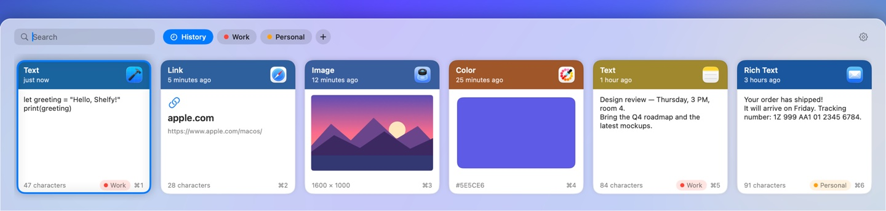

Everything you copy, one shortcut away
Shelfy remembers what you copy — text, links, images, files and colors. Press ⌘⇧V and paste anything from your history.
Download on the Mac App Store
One shortcut
⌘⇧V opens a drawer at the bottom of the screen. Pick a card with the arrow keys and press Return to paste.
Tags
Tag what matters and switch between tags with Tab. Tagged items are kept forever.
Search
Just start typing to find anything you’ve copied.
Private
Your history stays on your Mac. No accounts, no cloud, no network. Passwords from password managers are never saved.
Your rules
Keep history for a day, a month or forever — and clear it any time.
Thoughtful details
A gentle sound when you copy, source app icons, plain-text paste with Shift+Return. In English, Spanish and Russian.